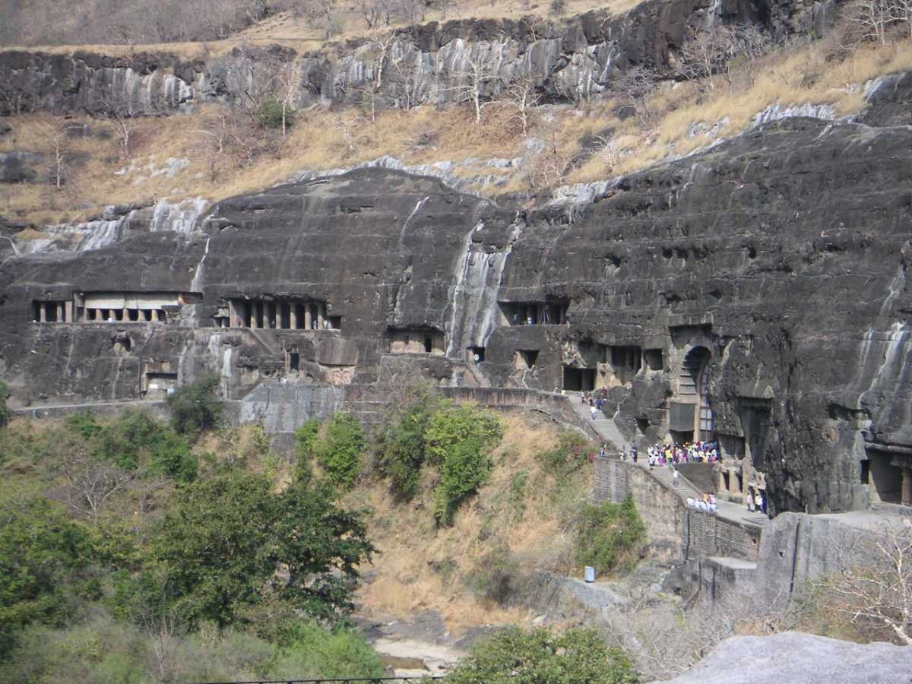

Maharashtra is the second-most populous state in India as well as the third-most populous country subdivision in the world.

1. Ajanta and Ellora Caves Tourism
Ajanta and Ellora caves, considered to be one of the finest examples of ancient rock-cut caves, are located near Aurangabad in Maharashtra, India. Ajanta and Ellora caves complex is adorned with beautiful sculptures, paintings, and frescoes and include Buddhist monasteries, Hindu and Jain temples. The Ajanta caves are 29 in number and were built between the 2nd century BC and 6th century AD, whereas the Ellora Caves are more spread out and 34 in number and dates to the period between 6th and 11th Century AD.
Ajanta and Ellora caves are designated as UNESCO World Heritage Sites and are quite popular among travelers worldwide. Ajanta Caves, located around 99km north of Aurangabad, are mostly Buddhist sites and were used as a retreat by Buddhist Monks. Ellora is just 15 km west of Aurangabad and has a better mix of Hindu, Jain, and Buddhist sites. These hand-carved caves were built and sponsored by the Indian rulers of those periods and almost buried by thick forests. One of the most famous places in the entire Ajanta and Ellora Caves is the Kailash Temple, which is also the single most massive monolithic structure globally. These rock-cut caves containing carvings are some of the best examples of ancient Indian architecture and sculpture.
2. Mahabaleshwar Tourism
Mahabaleshwar is a hill station located in the Western Ghats, in Satara district of Maharashtra. Apart from its strawberries, Mahabaleshwar is also well known for its numerous rivers, magnificent cascades and majestic peaks. It is among the most sought after weekend getaways from Pune & Mumbai, located about 120km south-west of Pune and 285km from Mumbai.
Mahabaleshwar is also a sacred pilgrimage place for Hindus as the Krishna river originates from here. Once a summer capital of the British, the hill station of Mahabaleshwar comprises of ancient temples, boarding schools, manicured and lush green dense forest, waterfalls, hills, valleys. It is often used as a base to visit the magnificent Pratapgad Fort, located an hour away.
3. Panchgani Tourism
Deriving its name from the five hills surrounding it, Panchgani is a popular hill station near Mahabaleshwar in Maharashtra, famous for its various sunset and sunrise points and scenic valley view.
Located at an altitude of 1,334 mts, Panchgani is also known as Paachgani as the five hills that form the Sahyadri mountain ranges offer Panchgani its name. The picturesque backdrop of hills on one side and coastal plains on the other makes for an amazing view. In the British era, the place was treated as a summer resort and hence many colonial period establishments can be seen here. Mahabaleshwar is like a twin city to Panchgani.